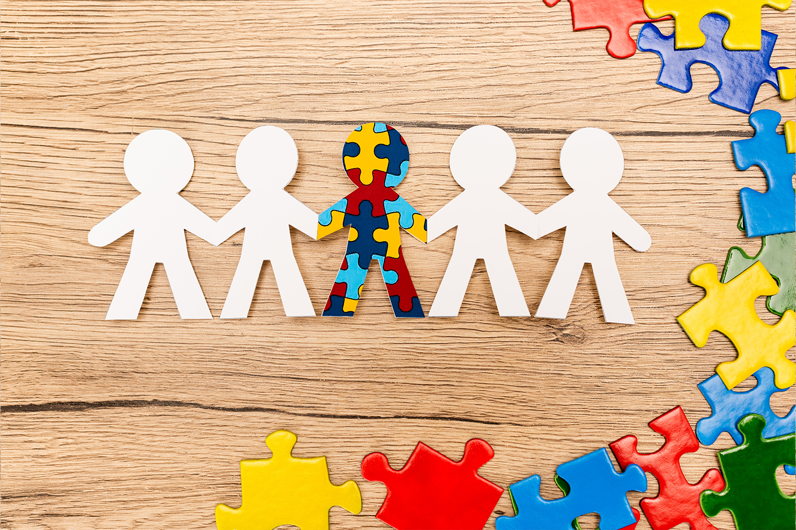
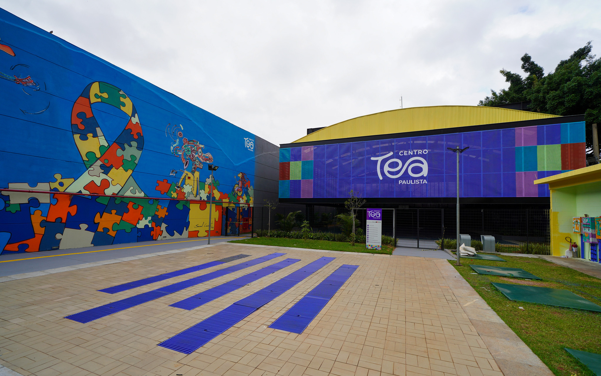
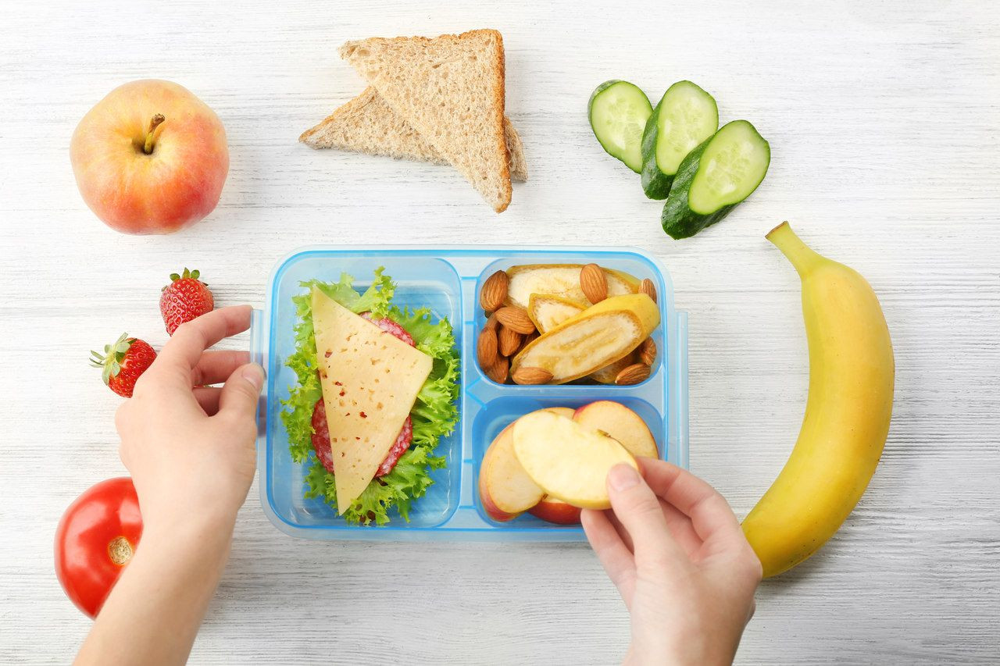

Bem-vindo ao universo de mentes únicas
O autismo é uma condição do desenvolvimento que influencia a forma como a pessoa se comunica, interage e percebe o mundo. Cada indivíduo autista é único. Aqui você encontra informações sobre locais em São Paulo de atendimento, atividades inclusivas e orientações sobre os níveis de suporte, sempre com o objetivo de promover bem-estar, inclusão e qualidade de vida.
O que você precisa?

Níveis de suporte
Informações básicas sobre os níveis 1, 2 e 3 de suporte e como cada um influencia as necessidades da pessoa autista.

Locais de Atendimento Especializado
Endereços e instituições em São Paulo que oferecem acompanhamento especializado para pessoas autistas e suas famílias.

Atividades Inclusivas e Lazer
Sugestões de parques, oficinas e eventos culturais que promovem para todos uma inclusão e diversão garantida.

Informações Alimentares
Dicas sobre alimentação saudável e adaptada às necessidades de pessoas autistas, com foco em bem-estar.
Níveis de Suporte no TEA
Os níveis de suporte no Transtorno do Espectro Autista (TEA), estabelecidos pelo DSM-5 (Manual Diagnóstico e Estatístico de Transtornos Mentais), não medem a gravidade da inteligência ou a capacidade verbal, mas sim a quantidade de apoio necessário que uma pessoa autista precisa para funcionar no dia a dia. O espectro é dividido em três níveis, focando nas áreas de comunicação social e comportamentos restritos/repetitivos.
Necessitando de apoio - Leve
A pessoa apresenta dificuldades que se tornam aparentes sem suporte, mas consegue se comunicar verbalmente e tem maior independência.
- Comunicação Social: Pode ter dificuldades em iniciar interações sociais, conversas, e fazer amigos. A fala pode ser funcional, mas o entendimento de nuances sociais é limitado.
- Comportamento: A rigidez comportamental causa interferência significativa em um ou mais contextos. Dificuldade em organizar e planejar atividades, além de inflexibilidade para mudar de foco ou ação.
- Suporte: Requer apoio para lidar com desafios sociais e organizacionais, mas geralmente tem autonomia.
Necessitando de apoio substancial - Moderado
A pessoa necessita de suporte mais consistente. As dificuldades são mais evidentes mesmo com apoio instalado.
- Comunicação Social: Apresenta dificuldades mais marcadas na comunicação verbal e não verbal. A interação social é limitada a interesses muito específicos e há notável déficit na resposta social.
- Comportamento: Comportamentos inflexíveis, rigidez comportamental e dificuldades em lidar com a mudança são mais frequentes e evidentes, interferindo em diversas situações.
- Suporte: Exige apoio substancial e constante para a vida cotidiana e atividades diárias.
Suporte Muito Substancial - Severo/Grave
A pessoa necessita de suporte intensivo em todas as áreas. As dificuldades causam impacto significativo no funcionamento diário.
- Comunicação Social: Déficits graves nas habilidades de comunicação social verbal e não verbal. Muitas vezes, a pessoa é não verbal ou usa fala funcional muito limitada, com interações sociais mínimas.
- Comportamento: Extrema dificuldade em lidar com mudanças. Grande rigidez comportamental, fixação em comportamentos atípicos e alto nível de angústia quando as rotinas são alteradas.
- Suporte: Exige apoio muito substancial e intensivo, pois a autonomia é bastante limitada.
- Os níveis não são fixos: Uma pessoa pode evoluir e precisar de menos suporte ao longo do tempo com as terapias corretas (como ABA, Fonoaudiologia, Terapia Ocupacional).
- Independência: O objetivo do suporte é aumentar a autonomia e qualidade de vida da pessoa autista.
- Variabilidade: Cada indivíduo dentro do mesmo nível pode apresentar características e necessidades diferentes.
- Triagem e Intervenção: O diagnóstico precoce e a intervenção precoce (inclusive envolvendo os pais) são fundamentais.
Locais de Atendimento especializados
São Paulo é uma cidade com uma rede diversificada de serviços especializados para pessoas autistas e suas famílias. Abaixo estão listados alguns dos principais locais de atendimento, incluindo clínicas, centros de diagnóstico, instituições de apoio e grupos de suporte. É importante entrar em contato diretamente com cada instituição para obter informações atualizadas sobre os serviços oferecidos, horários de atendimento e critérios de acesso.
Locais especializados na região de São Paulo
CAPSi (Centro de Atenção Psicossocial Infantojuvenil)
Foco de Atuação: Casos de TEA que apresentam sofrimento psíquico intenso, crises graves ou comorbidades psiquiátricas complexas (como agressividade severa ou autoagressão). Trabalham no modelo de "porta aberta" (você pode ir diretamente sem encaminhamento para uma triagem). Ele não foca apenas na terapia individual clássica, mas sim na reinserção social e no fortalecimento familiar.
Profissionais: Psiquiatras infantis, psicólogos, terapeutas ocupacionais, enfermeiros e assistentes sociais.
CER (Centro Especializado em Reabilitação)
Foco de Atuação: Habilitação e reabilitação do neurodesenvolvimento. É o local ideal para o desenvolvimento de fala, coordenação motora, habilidades sociais e autonomia para as atividades do dia a dia. Diferente do CAPSi, o acesso ao CER exige encaminhamento médico (geralmente feito pelo pediatra ou clínico geral da Unidade Básica de Saúde - UBS).
Profissionais: Fonoaudiólogos, terapeutas ocupacionais (frequentemente com integração sensorial), fisioterapeutas, psicólogos e neuropediatras.
AMA (Associação de Amigos do Autista)
Foco de Atuação: Atendimento educacional especializado e terapêutico para pessoas com TEA em todos os níveis de suporte, desde crianças até adultos. O atendimento é 100% gratuito através de convênios com as Secretarias de Saúde e Educação. Por ser um serviço altamente especializado e gratuito, costuma ter listas de espera longas.
Critério de Acesso: Para as unidades de São Paulo, por exemplo, a criança precisa estar matriculada na rede pública de ensino e obter um encaminhamento oficial através da Diretoria de Ensino ou da Secretaria de Saúde.
Atividades Inclusivas e Lazer em São Paulo
Lazer e cultura são direitos de todos. São Paulo oferece espaços e eventos pensados para proporcionar experiências prazerosas e seguras para pessoas autistas e suas famílias.
Parques e Espaços ao Ar Livre
Parque Estadual da Cantareira
Amplo espaço verde com trilhas tranquilas, ideal para quem aprecia ambientes naturais e com menos estímulos sonoros urbanos.
Parque Aclimação
Possui zoológico de pássaros, espaço amplo e áreas sombreadas. Boa opção para passeios em horários menos movimentados.
Parque Villa-Lobos
Espaço amplo com ciclovia, campo e áreas de descanso. Tranquilo em dias de semana.
Cultura e Entretenimento
Sessões Adaptadas no Cinema
Diversas redes (Cinemark, Cinépolis, Cinemaximo) oferecem sessões com som reduzido, iluminação parcial e ambiente mais relaxado. Consulte a programação no site de cada rede.
Museu Catavento Cultural
Museu de ciências interativo que frequentemente oferece visitas adaptadas para pessoas com TEA, com agendamento prévio.
Endereço: Av. Mercúrio, s/n — Brás, SP
Museu da Imaginação
O Museu da Imaginação promove diversas atividades que estimulam as crianças a colocarem a mão na massa. Oferece oficinas de robótica, oficinas artísticas, apresentações científicas e muito mais!
Endereço: Rua Virgilio Wey, 100 - Água Branca, São Paulo - SP
Parque da Mônica
O Parque da Mônica é o parque temática da Turma da Mônica e conta com entrada gratuita para autistas até 17 anos (através de parceria) e, geralmente, um acompanhante paga meia. Possui sala silenciosa e abafadores.
Endereço: Av. das Nações Unidas, 22540 - Jurubatuba, São Paulo - SP
Cidade da Criança (SBC)
A Cidade da Criança é um parque de diversões brasileiro localizado no centro da cidade de São Bernardo do Campo, na região metropolitana de São Paulo.
Endereço: R. Tasman, 600 - Jardim do Mar, São Bernardo do Campo - SP
Alimentação Especializada
A alimentação de pessoas autistas pode apresentar desafios específicos, como seletividade alimentar, preferências por texturas ou sabores específicos e dificuldades sensoriais. É importante buscar orientação de profissionais especializados, como nutricionistas e terapeutas ocupacionais, para desenvolver estratégias que promovam uma alimentação equilibrada e adaptada às necessidades individuais, garantindo o bem-estar e a saúde da pessoa autista.
Nutrição e TEA: Estratégias para Seletividade e Saúde Intestinal
Desafios Comuns na Alimentação
Seletividade alimentar extrema: Preferência rígida por determinadas cores, formatos, marcas ou temperaturas.
Hipersensibilidade sensorial: Rejeição de alimentos devido a texturas específicas (pastosos, crocantes), cheiros ou sabores intensos.
Problemas gastrointestinais: Alta incidência de constipação, diarreia, refluxo e dores abdominais..
Estratégias Nutricionais Clínicas
Abordagem Fresh & In Natura: Priorização de alimentos frescos e redução drástica de ultraprocessados, corantes, conservantes e açúcares refinados.
Dietas de exclusão (sob supervisão): Protocolos como a dieta sem glúten e sem caseína (SGSC) ou dieta cetogênica ajudam a reduzir sintomas em um subgrupo de crianças, mas só devem ser feitas com acompanhamento rigoroso para evitar desnutrição.
Suplementação direcionada: Investigação de carências comuns e reposição orientada de Vitamina D, Ômega-3, Ferro, Zinco e Vitaminas do complexo B.
Como Trabalhar a Seletividade em Casa
Contato
Entre em contato com o projeto ou diretamente com os membros da equipe.
Contato do projeto:
neuroabracofmu@gmail.com
Contato dos membros
- Nadia rtv.nadia@gmail.com
- Robson Junior fariasjuniorrobson@gmail.com
- Pedro Henrique pehenriquepereira1@gmail.com
- Nadia rtv.nadia@gmail.com
- Nadia rtv.nadia@gmail.com
- Nadia rtv.nadia@gmail.com
- Nadia rtv.nadia@gmail.com
Quem Somos
Somos uma equipe formada a partir de um projeto acadêmico desenvolvido no primeiro semestre do curso de Análise e Desenvolvimento de Sistemas da FMU, em São Paulo.